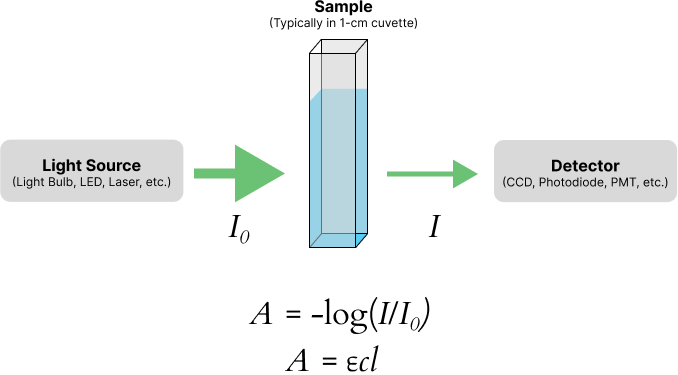

Nitrate Determination
Background
Nitrate-nitrogen may be present in small amounts in fresh domestic wastewater. However, it is seldom found in influents to treatment plants because the nitrate serves as an oxygen source in the biologically unstable wastewater. On the other hand, nitrate is often found in the effluents of biological treatment plants, because it represents the final form of nitrogen from the oxidation of organic nitrogen compounds. Trickling-filter and activated sludge treatment plant effluents may contain from 0 to 50 mg/L nitrate, depending on the total nitrogen content of the influent, the degree of loading, and the temperature of the sewage.
Nitrate may also be found in river water, lake water, and most importantly in ground water. The nitrate may originate from sewage, or in rural areas, it may be produced by fertilizer or barnyard runoff. The U.S. Public Health Service designated safe limit for nitrate in water is 45 ppm nitrate or 10 ppm nitrate-nitrogen. Nitrate in drinking water is particularly dangerous to small children, infants, and unborn fetuses.
This experiment uses commercially-available reagents, but is similar to EPA method 353.3. More information can be found on the EPA web archive.
Absorption Spectroscopy (Colorimetric Method)
In this experiment, nitrate will be determined spectrophotometrically using the Vernier SpectroVis. Spectrophometry is a commonly used method to determine aqueous anions. The fundamentals of absorption spectrophotometry are shown below. A light source shines light through a sample cell (a cuvette) and onto a detection system, which serves to convert the light into an electric signal (Figure 1). The basic idea is that as the concentration of the colored complex increases in the cuvette, we would expect less light to be transmitted to the detection system. Hence, we are interested in the absorption of light by the sample:

Methods that use visible light to detect the analyte are called colorimetric methods.
Standardization
A series of solutions is prepared with a known amount of analyte (standards) and the absorbance is measured on the Vernier SpectroVis. A graph is then prepared of absorbance (y-axis) versus concentration (x-axis). This graph is called a standard curve or calibration curve. The calibration curve will be used to develop a quantitative relationship between concentration and absorbance. Then absorbance will be measured for the water samples, and the graph will be used to calculate the concentration of analyte in the samples. A generalized example is shown below in Figure 2.

Procedure
The notebook template for this lab can be found on GitHub.
Standard Preparation
A ~500-mg L\(^{-1}\) NO\(_3^-\) stock solution has been prepared for you.
Prepare a ~10-ppm nitrate intermediate stock solution using the 500-ppm stock solution provided. You will need about 50 ml of this solution.
Using your intermediate stock solution, prepare 5 standards with concentrations ranging from (approximately) 0–10 mg L\(^{-1}\). Make 25 mL of each solution, and remember that \(C_1V_1 = C_2V_2\).
Determination of Nitrate
SpectroVis Setup
If you haven't already, download Vernier Spectral Analysis and install it on your computer.
Open the Spectral Analysis software and expand the Absorbance mode menu. From there, choose Absorbance vs. Concentration (Beer's Law).
Allow the lamp to automatically warm up for 90 seconds (do not skip).
When the 90 seconds has passed, insert a cuvette containing your blank (DI water) into the spectrometer and click Finish Calibration. (This step appears to set the integration time of the spectrophotometer – it does not actually calibrate it or measure the sample.)
After the previous step, a wizard will appear to choose the measurement wavelength. Place your high standard into the instrument and follow the on-screen instructions to choose the wavelength with the highest absorbance. Enter that wavelength into the "Selected Wavelength" box. If the wizard does not appear, click the settings icon in the top right of the software to access it.
Sample Color Development
The following procedure should be performed on each of your 6 calibration standards and each of your water samples.
Place 25 mL of each standard and sample into separate 50-mL beakers or Erlenmeyer flasks.
Create a blank with 25 mL of deionized water.
Add the contents of one NitraVer5 Nitrate reagent packet to each sample. Be careful! There is Cd metal in the reagent packet, so the contents of the reagent packet are toxic. Wear gloves, goggles, and avoid inhaling the reagent powder. Be careful about what you touch with your gloves.
Swirl each flask vigorously for 1 minute. Wait at least 5 minutes, but no longer than 15 minutes before reading the absorbance of each sample.
Determination of Nitrate
After the designated time, use a plastic pipette to transfer some of each solution to the cuvette and complete a measurement. Follow the guidelines listed directly below!
Always work from lowest concentration to highest concentration to avoid cross-contamination!
Make sure to measure each standard once and each sample three times!
Make sure to rinse the cuvette 3 times with DI water between each measurement!
Make sure to record the instrument parameters (measurement wavelength) and your measurements in your notebook!
After measuring the absorbance of the standards, make a plot of absorbance versus concentration as described by your instructor using Excel. Add a trendline to your graph with the intercept set to zero and add the equation for the trendline and the \(R^2\) value to your graph. Label the \(x\)- and \(y\)-axes, including units for the concentration. Use the equation of the trendline to determine the nitrate concentration in the samples.
What to Turn In
Upload the .jl and .html versions of your completed notebook to the assignment for this experiment on Canvas.